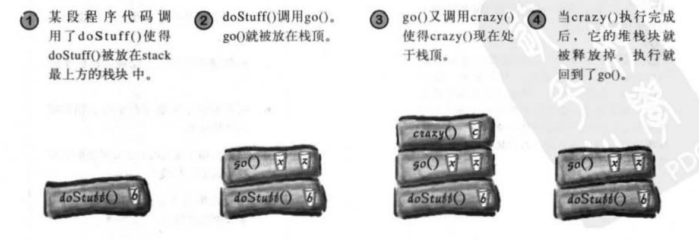
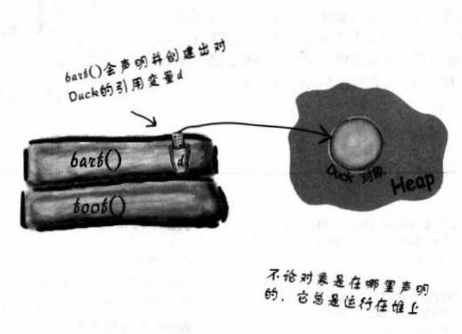
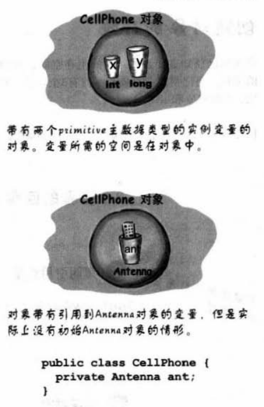
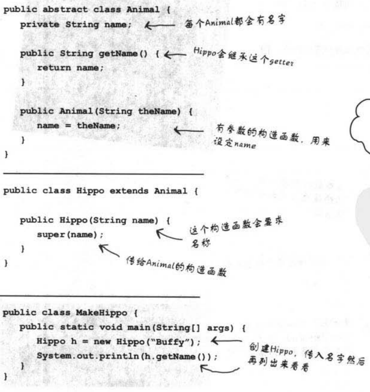
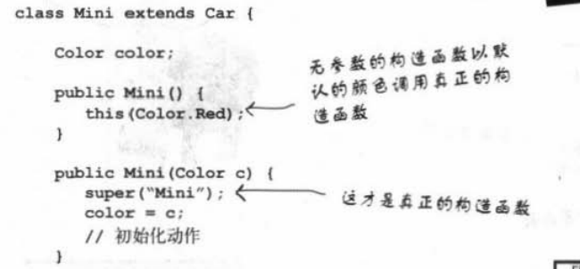
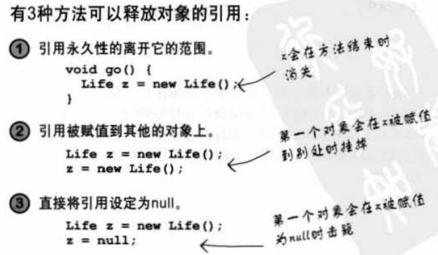

Head First Java读书笔记。
9. 构造器与垃圾收集器
生存空间：堆栈
堆栈储存内容
栈：方法调用和局部变量
堆：所有的对象（含实例变量）
栈的执行

堆的执行

实例变量
局部变量和对象引用还有方法调用在在栈上，对象都在堆上，那实例变量在哪儿呢？

实例变量保存在堆上。如果实例变量是一个对象引用，则保持这个引用。
构造函数：诞生
继承与构造
编译器默认会给你建立无参数构造
编译器会默认在子类调用super()
如果继承有参的话，直接super()调用父类
例如：

调用重载构造
每个构造函数可以调用super()或this()但是不能同时调用。

生命周期
“ Iife “ 与 “ scpoe “ 的差别
- life：只要变量还在堆栈中，就life活着
- scope：当方法调用别的方法时，变量life活着，但scope已经不在。等别的方法执行完成scope回来
对象回收

10. 数字与静态
静态
Math方式就不需要实例化，直接调用，以为它就是个静态类。
静态方法
不需要产生实例，可以直接使用
- 静态方法不能调用非静态变量
- 静态方法不能调用非静态方法
我们需要明白静态方法的具体过程：
java虚拟机（jvm）只有一个堆区被所有线程所共享，堆区中有一块特殊的区域叫做方法区（静态区），该区域也是被所有线程共享的，jvm保存的所有的信息都在这个方法区中，所以方法区在加载方法信息的时候是统一对待的，无论静态方法或实例方法，都在类第一次被使用时加载，时机上没有任何区别的静态方法在程序开始时生成内存,实例方法在程序运行中生成内存，所以静态方法可以直接调用,实例方法要先成生实例,通过实例调用方法，静态速度很快，但是多了会占内存，所以不管是任何语言都是对内存和磁盘的操作,至于是否面向对象,只是软件层的问题,底层都是一样的,只是实现方法不同。静态内存是连续的,因为是在程序开始时就生成了,而实例申请的是离散的空间,所以当然没有静态方法快，而且静态内存是有限制的，太多了程序会启动不了。
注意
我们可以通过getInstance()来获取该静态方法下的可用实例。
静态变量
- 所有实例共享，对说有实例都相同。
- 静态变量甚至在静态方法执行之前就初始化了
- 静态的final变量
- 应该全部大写
- 相当于全局变量
这个final不仅仅可以用在静态上，还能用在非静态上，
final——不能更改、不能覆盖、不能继承
包装
//包装
int i =288;
Integer iWarp = new Integer(i);
//解开包装
int UnWarpped = iWarp.intValue();
但现在有了自动装箱——我们不需要把primitive类型和对象分的那么清楚。
包装的静态
讲String化为Int就是静态的：
String s = "2";
int x = Integer.parseInt(s);
double d= Double.parseDouble("321.54");
反过来化为String也是静态的：
double d = 54.3;
String doubleString = ""+d;
String DoubleString2 = Double.tostring(d);
数字格式化
使用Sting.format()
int one = 33321;
double two = 323423.3445;
String s = String.format("one=%,d;two=%.2f",one,two);